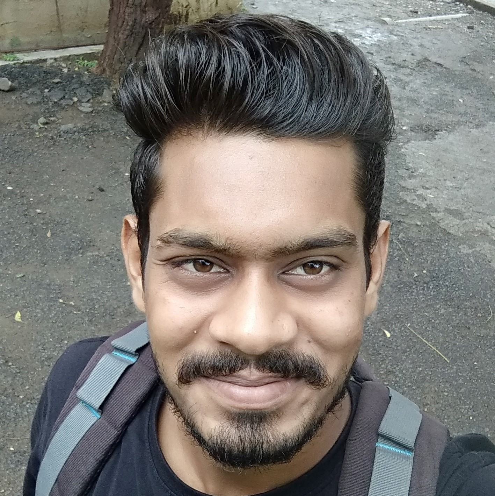

I am currently interning at Nanyang Technological University, Singapore in School of Computer Science and Engineering with Prof. Lam Siew Kei. I am working on Improvement of Vehicle Classification via Unsupervised Domain Adaptation by using deep learning approch. I have completed summer internship from Indian Institute of Technology, Ropar (India) under the guidance of Prof. Subrahmanyam Murala at Computer Vison & Pattern Recognition Lab on face aging using adversarial training.
My reseach interest lies in the field of Machine Learning, Computer Vision and in a general development of intelligent system that leverage machine learning in an efforts to improve the quality of human life. I love to watch Sci-Fi movies in my free time and the movies like Intesteller, Passenger, Ready Player One, etc. inspire and promote me to contribute my skills and knowledge in the astrophysics and artificial consciousness.
You can find my Curriculam Vitae here.